먼저 보세요01
숨고
와 포인트‘강남구에서 어떤 서비스가 필요하세요?’ 검색창 하나와 그 아래 분야 아이콘 한 줄로 시작합니다. 동네가 먼저 잡혀 있어서 고객은 하고 싶은 일만 적으면 됩니다.
BUILDGO라면BUILDGO 첫 화면 그대로 — ‘○○구에서 어떤 공사가 필요하세요?’ 검색창과 시공 분야 아이콘 6개. 보내주신 그림의 구조가 가장 잘 다듬어진 국내 예입니다.
더원파트너스 · BUILDGO 플랫폼 레퍼런스 보드
BUILDGO는 회사 소개 홈페이지가 아니라 플랫폼입니다. 설계·시공 전문가를 찾고 맡기는 중개, 회원만 사는 자재 쇼핑몰, 등급별 가격과 포인트 — 이 세 가지를 잘 해낸 플랫폼 33곳을 모았습니다. 카드의 영상은 실제 화면을 녹화한 것입니다.
시안 3개부터 보기이 보드의 레퍼런스를 바탕으로 BUILDGO 화면을 세 방향으로 만들었습니다. 폰과 PC에서 실제로 눌러 볼 수 있고, 화면 속 업체·가격·후기·포인트는 모두 예시입니다.
 시안 1 · 간지·인터랙션
시안 1 · 간지·인터랙션
어두운 설계도 바탕에서 검색창 뒤로 건물 도면이 선으로 그려지고 완성된 건물로 바뀝니다. 시공 분야를 고르면 배경 도면이 바뀌고, 전문가 카드를 누르면 카드가 커지며 상세로 이어집니다. ‘회원가 보기’를 켜면 정가에 줄이 그어지고 내 등급 가격이 나타납니다.
시안 열어보기 ↗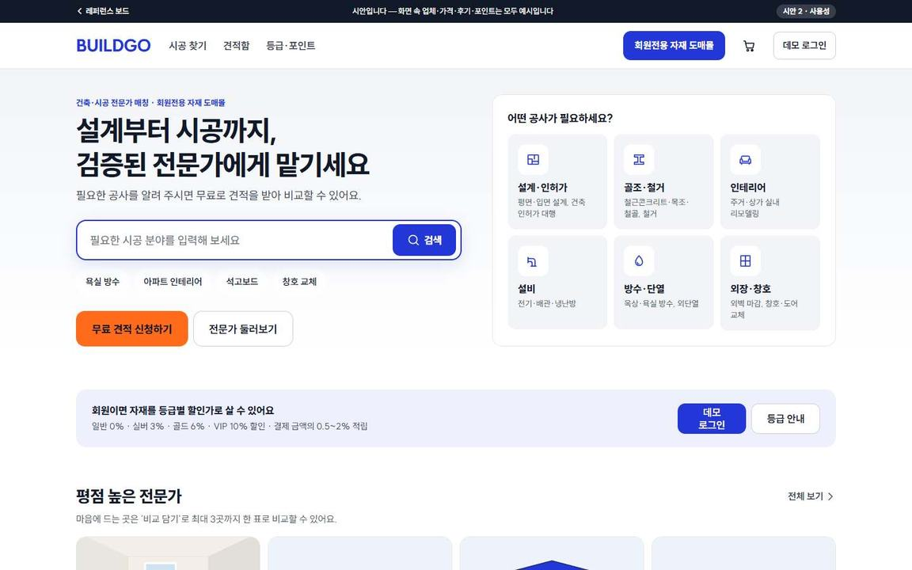
시안 2 · 사용성밝고 또렷한 화면, 폰 아래 탭바, 분야·전문가·자재가 함께 나오는 검색, 결과 개수가 붙은 필터, 전문가 최대 3명 비교표, 빠진 항목을 알려 주고 자동 저장되는 견적 요청, 정가·등급 할인·결제 예정·적립 예정으로 나눈 가격.
시안 열어보기 ↗ 시안 3 · 우리가 권하는 안
시안 3 · 우리가 권하는 안
‘마포 34평 리모델링’ 같은 현장을 만들고, 맡길 전문가의 패키지와 필요한 자재를 그 현장에 함께 담습니다. 등급 할인과 포인트가 반영된 예상 총비용이 늘 보이고, 담긴 전문가 모두에게 한 번에 견적을 요청합니다. 전문가 입점 화면에는 예상 월 매출 계산기가 있습니다.
시안 열어보기 ↗보내주신 그림과 문의 내용에 플랫폼의 뼈대가 이미 있습니다 — 검색으로 시작하는 중개, 전문가 카드와 무료 견적, 회원만 들어오는 자재 도매몰, 등급별 가격과 포인트. 회사를 소개하는 곳이 아니라 ‘찾고, 맡기고, 사는’ 곳입니다.
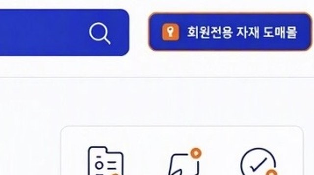
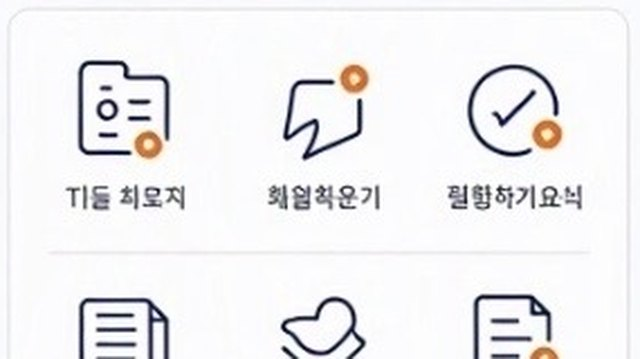
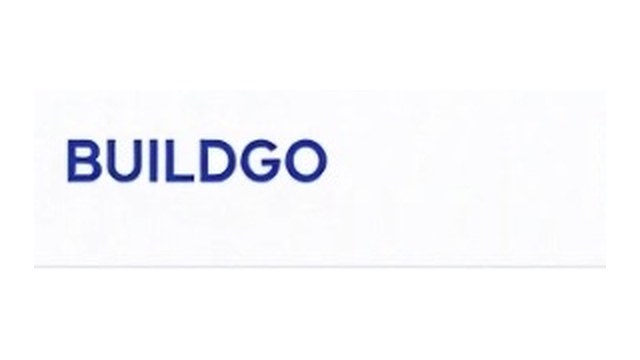
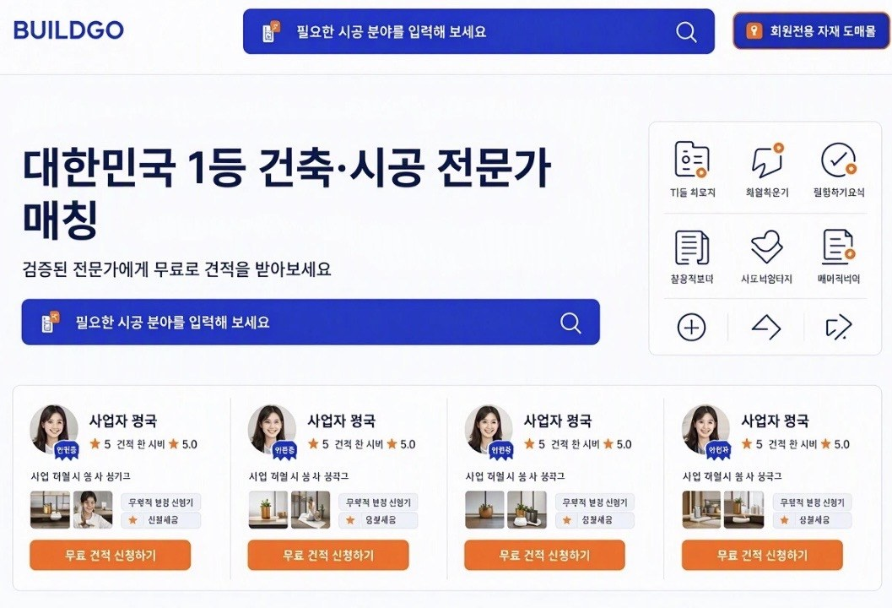
보내주신 그림처럼 검색창이 주인공인 첫 화면들. 잘 되는 중개 플랫폼은 첫 화면에서 ‘무엇이 필요하세요?’ 하나만 묻습니다. 플랫폼은 웹 어워드보다 실제로 많이 쓰이는 곳이 기준이라, 이 보드는 상보다 쓰임새로 골랐습니다.
와 포인트‘강남구에서 어떤 서비스가 필요하세요?’ 검색창 하나와 그 아래 분야 아이콘 한 줄로 시작합니다. 동네가 먼저 잡혀 있어서 고객은 하고 싶은 일만 적으면 됩니다.
BUILDGO라면BUILDGO 첫 화면 그대로 — ‘○○구에서 어떤 공사가 필요하세요?’ 검색창과 시공 분야 아이콘 6개. 보내주신 그림의 구조가 가장 잘 다듬어진 국내 예입니다.
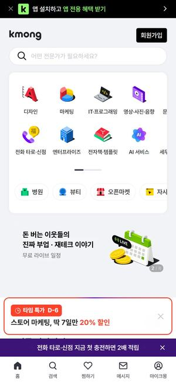
02와 포인트‘성공이 필요한 순간, 딱 맞는 전문가를 찾아보세요’ 한 줄과 검색창, 분야 아이콘. 바로 아래부터 인기 서비스가 상품처럼 진열됩니다.
BUILDGO라면‘설계부터 시공까지 기술 판매’의 첫 화면 문법 — 검색창 아래에 설계·시공 서비스를 상품 카드로 진열합니다.
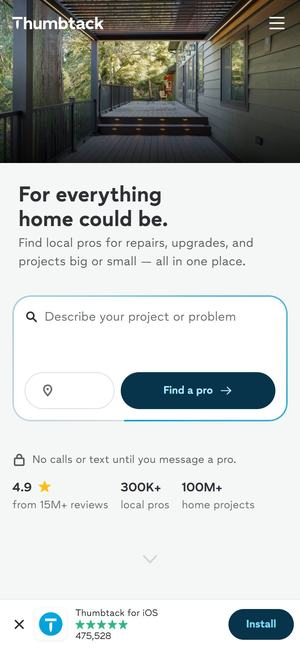
03와 포인트데크가 보이는 집 사진 위에 ‘집이 될 수 있는 모든 것을 위해’ 문구와 검색창, 그 아래 평점과 이용 규모를 작게 둡니다. 스크롤하면 ‘우리 동네 모든 공사의 전문가’ 분야 아이콘이 이어집니다.
BUILDGO라면시공 사진 한 장 + 검색창 + 믿음을 주는 숫자 한 줄로 끝나는 첫 화면. 숫자는 BUILDGO 실적이 생기면 넣습니다.
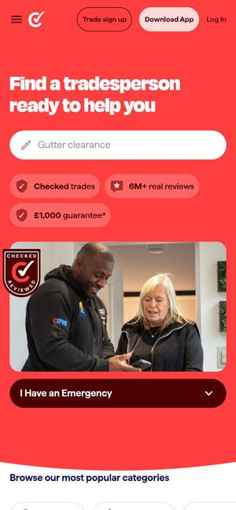
04와 포인트빨간 바탕에 ‘도와줄 기술자를 찾아보세요’ 검색창, 바로 아래 배관·전기·지붕 같은 분야 버튼. 그 밑에 ‘12가지 검증’, ‘실제 후기’, ‘보증’ 세 가지 약속을 아이콘으로 보여줍니다.
BUILDGO라면‘검증된 전문가’라는 BUILDGO의 약속을 첫 화면에 세 개의 아이콘으로 — 무엇을 확인했는지(면허·사업자·보험)를 보여주는 자리입니다.
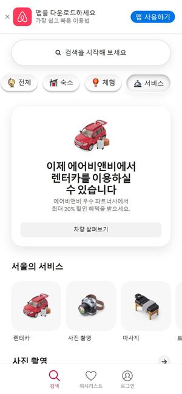
05와 포인트맨 위 ‘숙소 · 체험 · 서비스’ 탭과 큰 검색창. 서비스 탭에서는 분야를 입체 아이콘으로 고르고, 그 아래 ‘서울의 서비스’처럼 동네 전문가 카드가 사진과 함께 줄지어 나옵니다.
BUILDGO라면위쪽을 ‘시공 찾기 · 자재 사기’ 두 탭으로 나누고, 시공 분야는 아이콘으로, 전문가는 사진 카드로 — 중개와 쇼핑을 한 검색창에서.
와 포인트전문가가 일하는 영상이 화면 가득 흐르고, 그 위에 ‘우리 프리랜서가 여기서부터 맡겠습니다’ 문구와 검색창, 인기 분야 버튼이 놓입니다.
BUILDGO라면첫 화면 배경을 실제 시공 현장 영상으로. 검색창은 그대로 두고 ‘설계·리모델링·인테리어’ 같은 인기 분야 버튼을 바로 아래에.
메인 사업인 ‘설계부터 시공까지 기술 판매’를 플랫폼에서는 이렇게 팝니다. 전문가가 자기 기술을 패키지와 가격으로 올리고, 고객은 비교해서 바로 사거나 견적을 받습니다.
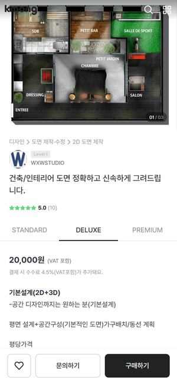
먼저 보세요07와 포인트도면 서비스 하나를 STANDARD·DELUXE·PREMIUM 세 패키지로 나눠 작업일과 수정 횟수를 표로 비교하게 하고, 패키지마다 ‘구매하기’ 버튼으로 바로 결제까지 갑니다.
BUILDGO라면서비스 상세의 기본 틀 — 설계사가 ‘평면도만 / 3D 포함 / 실시설계’처럼 자기 설계 기술을 세 단계 상품으로 올리고, 고객은 비교해서 바로 삽니다.
와 포인트주택 시공 비용을 평균·최저·최고 금액으로 먼저 보여주고, 이 금액이 실제 고수들이 낸 견적에서 나왔다고 설명합니다. 옆에는 견적을 요청하는 버튼이 따라다닙니다.
BUILDGO라면가격이 딱 정해지지 않는 시공은 ‘공종별 예상 견적 범위 + 견적 요청 버튼’ 화면으로. 고객이 예산 감을 잡고 들어오게 합니다.
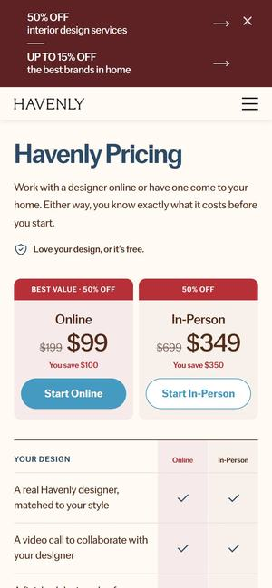
09와 포인트인테리어 디자인을 ‘온라인’과 ‘방문’ 두 상품으로 나눠 원래 가격과 할인 가격을 크게 보여주고, 아래 표로 각 상품에 무엇이 들어 있는지 비교하게 합니다.
BUILDGO라면설계 상담을 ‘비대면 / 현장 방문’ 두 상품으로 나눠 가격을 미리 정해 파는 설계 상품 카드. 회원 등급가를 보여줄 때도 같은 표를 씁니다.
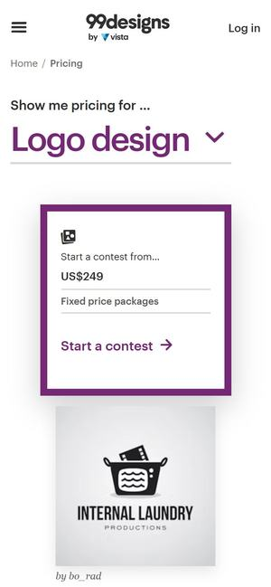
10와 포인트같은 디자인 서비스를 정해진 가격의 등급별 패키지로 나란히 놓고, 등급마다 무엇이 더 들어가는지 표 하나로 비교하게 합니다.
BUILDGO라면‘기본·표준·프리미엄’ 고정가 등급표 — 설계·시공 패키지에도, 회원 등급별 혜택 설명에도 같은 문법을 씁니다.
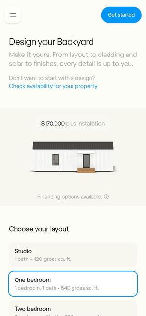
11와 포인트왼쪽에 집 그림, 오른쪽에 ‘구조 고르기’. 방 개수와 외장을 고를 때마다 그림과 가격이 바로 바뀌고, 그 화면에서 견적 요청까지 이어집니다.
BUILDGO라면규격이 정해진 시공 상품(소형 주택·창고·조립식 건물)을 ‘사양을 고르면 예상 가격이 바로’ 화면으로 팝니다.
고객이 ‘이 업체에 맡겨도 되겠다’고 느끼게 하는 목록과 프로필. 면허·평점·후기 수·시공 사진·견적 비교가 핵심입니다.
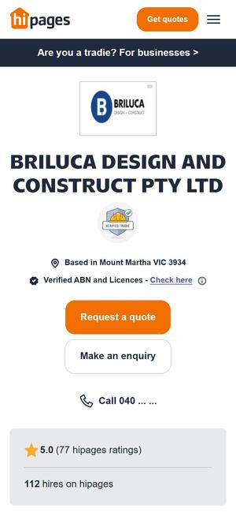
먼저 보세요12와 포인트설계·시공 업체 한 곳의 이름과 ‘견적 요청’ 버튼이 맨 위에, 아래로 실제 시공 사진 모음과 별점·후기가 이어집니다. 업체의 면허 정보도 프로필에 함께 들어 있습니다.
BUILDGO라면보내주신 전문가 카드를 누르면 나오는 화면 — 면허·사업자 확인, 시공 사진, 별점과 후기, 그리고 ‘무료 견적 신청’.
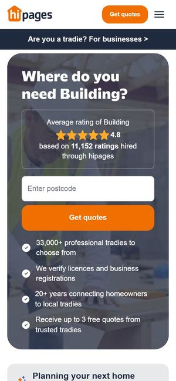
13와 포인트‘우리 동네 건축업체 찾기’ 옆에 바로 견적 받기 입력창을 두고, 아래로 평점 높은 업체 카드와 후기가 이어집니다. 무료 견적을 세 곳까지 받는다고 앞에 내겁니다.
BUILDGO라면시공 분야를 고르면 나오는 전문가 목록 — 맨 위에 견적 요청 칸, 아래에 평점 순 업체 카드.
와 포인트병원 한 곳의 평점과 후기 수를 맨 위에 두고, 정보·이벤트·가격·시술·후기를 탭으로 나눕니다. 소속 원장마다 평점과 후기 수를 카드로 따로 보여줍니다.
BUILDGO라면업종은 달라도 구조는 그대로 — 시공사 한 곳의 평점·후기 수를 맨 위에, 회사 정보·시공 사례·가격·후기를 탭으로, 소속 기술자마다 평점 카드.
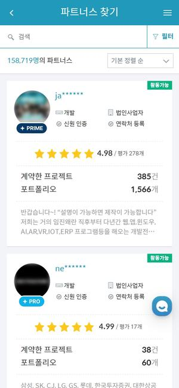
15와 포인트왼쪽에 등급·형태·지역 필터, 오른쪽에 파트너 카드가 평점·계약한 프로젝트 수·포트폴리오 수와 함께 쭉 나옵니다. 카드마다 등급 표시가 붙습니다.
BUILDGO라면전문가 목록의 필터(공종·지역·등급)와 ‘전문가 등급’ 표시 — 고객 회원 등급과 별도로 전문가에게도 등급을 둘 때 참고합니다.
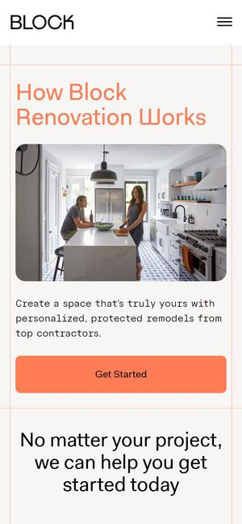
16와 포인트‘Block은 이렇게 일합니다’ 아래로 공간 고르기, 검증된 지역 시공사 연결, 최대 세 곳의 견적 비교, 담당 매니저 도움이 순서대로 이어집니다.
BUILDGO라면‘이용 방법’ 화면 — 견적 요청부터 시공사 선택까지를 네 단계로. 처음 온 건축주가 망설이지 않게 합니다.
플랫폼은 양쪽이 있어야 돌아갑니다. 설계사·시공사가 ‘여기 들어오면 일이 생긴다’고 느끼게 하는 입점 안내 화면들입니다.
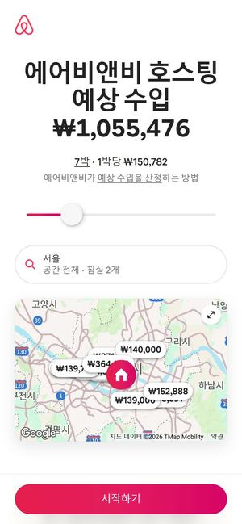
먼저 보세요17와 포인트첫 화면에서 ‘호스팅 예상 수입’ 금액이 올라가며 나타나고, 호스팅할 날 수를 슬라이더로 밀면 금액이 바로 바뀝니다. 옆 지도에는 우리 동네 비슷한 숙소가 보입니다.
BUILDGO라면전문가 모집 화면에 ‘한 달 처리 건수 × 평균 단가’를 밀어 보는 예상 매출 계산기. 가입 전에 ‘여기 오면 얼마 버나’를 보여줍니다.
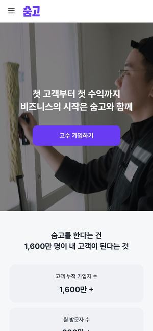
18와 포인트‘첫 고객부터 첫 수익까지, 비즈니스의 시작은 숨고와 함께’ 한 줄과 가입 버튼, 바로 아래 고객 가입자·월 방문자·전문가 가입자 수를 큰 숫자로 보여줍니다.
BUILDGO라면설계사·시공사 입점 첫 화면 — ‘가입하면 이만큼의 고객을 만난다’를 큰 숫자 카드로. 숫자는 BUILDGO 실적이 쌓이면 넣습니다.
와 포인트‘당신의 전문성이 의뢰인의 성공을 만듭니다’ 문구 아래 상위 전문가 월평균 수익·회원 수·첫 판매까지 걸리는 기간을 숫자로 보여주고, 실제 전문가들의 판매 성과 카드가 이어집니다.
BUILDGO라면판매자(설계·시공사) 모집 화면 — 입점 후 첫 수주까지의 기간, 먼저 들어온 전문가의 성공 사례 카드.
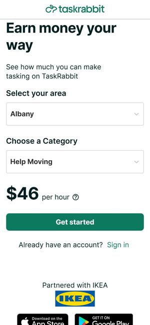
20와 포인트일하는 사람 사진 옆에 ‘원하는 방식으로 돈을 버세요’. 지역과 일의 종류를 고르면 시간당 예상 수입이 바로 나오고 ‘시작하기’로 이어집니다.
BUILDGO라면공종(도배·설비·설계 등)과 지역을 고르면 예상 수입이 나오는 시공 파트너 모집 화면.
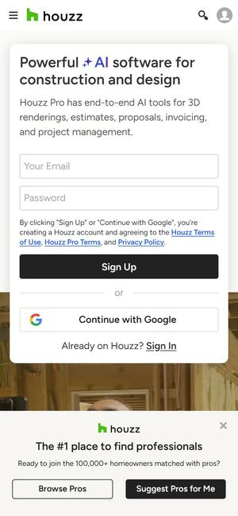
21와 포인트첫 화면에 업체용 ‘시공·디자인 업무 프로그램’ 가입과 집주인용 ‘공사에 맞는 전문가 찾기’를 함께 둡니다. 아래로 내리면 사진으로 둘러보는 집 꾸미기 아이디어가 이어집니다.
BUILDGO라면양쪽 입구를 첫 화면에 — 고객은 ‘전문가 찾기’, 업체는 ‘견적·일정 관리 도구’. 업체가 매일 쓰는 도구가 있으면 플랫폼을 떠나지 않습니다.
회원전용 건설 자재 판매. 수많은 자재를 빨리 찾고, 규격을 고르고, 내 회원가로 대량 주문하는 화면이 잘 된 곳들입니다.
 먼저 보세요22
먼저 보세요22와 포인트‘나사’ 하나를 고르면 머리 모양·용도별로 나뉜 수십 가지 종류가 그림 목록으로 한 화면에 펼쳐지고, 왼쪽 필터로 바로 좁혀 들어갑니다. 사진 대신 단정한 그림을 써서 한눈에 비교됩니다.
BUILDGO라면자재몰 ‘찾기’의 기준 — ‘타일 → 용도 → 규격’처럼 분류 한 번에 좁혀 들어가는 목록. 자재가 수천 개여도 헤매지 않게 합니다.
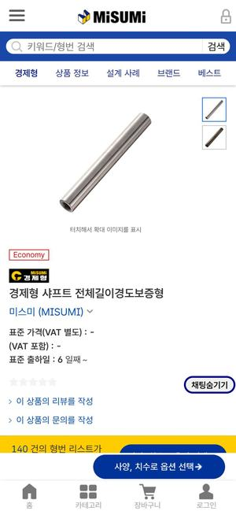
23와 포인트부품 하나를 시리즈 단위 상세 화면으로 보여주고, 아래 규격표에서 치수를 골라 품번을 정합니다. 검색창부터 ‘키워드 및 형번을 입력해 주세요’라서 품번으로 바로 다시 주문할 수 있고, 도면(CAD) 내려받기도 함께 있습니다.
BUILDGO라면자재 상세 — 같은 자재의 규격을 한 화면에 모으고, 회원이 품번으로 바로 재주문하게. 시공사 회원에게 가장 손이 덜 가는 방식입니다.
 24
24와 포인트‘기업 전용 쇼핑몰’을 내걸고, 작업공구 분류에서 브랜드별로 골라 봅니다. 상품 상세에는 ‘규격 전체보기’, ‘빠른 옵션 선택’, ‘대량구매 문의’가 붙어 있습니다.
BUILDGO라면회원전용 자재몰의 국내 예 — 사업자 회원만 쓰는 몰 구조, 그리고 상세 화면의 ‘대량구매 문의’ 버튼.
 25
25와 포인트‘찾고, 받아 보고, 정한다(Search. Sample. Specify.)’ 세 단어와 샘플 상자 하나로 시작해, 수백 개 브랜드의 자재를 질감 사진 카드로 둘러봅니다. 가입한 전문가만 샘플을 주문합니다.
BUILDGO라면누구나 구경은 하되, 사업자 회원으로 가입해야 도매가와 주문이 열리는 구조. 자재를 질감 사진으로 고르게 합니다.
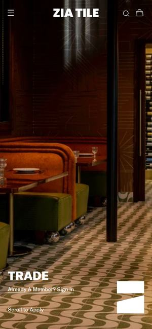
26와 포인트시공 사진 위에 ‘TRADE’ 한 단어. 사업자 회원은 견적에서 일반가와 회원가를 둘 다 본다고 안내하고 바로 가입 양식으로 이어집니다.
BUILDGO라면등급별 가격의 표시법 — 상품마다 ‘정가 → 내 등급 가격’을 나란히 보여주면 가입할 이유가 한눈에 보입니다.

 Awwwards 우수작 · 2025.0627
Awwwards 우수작 · 2025.0627와 포인트잡지 같은 실내 사진 한 장으로 시작하는 목재몰. 길이를 넣어야 가격이 나오고, 현장마다 견적 목록을 따로 만들 수 있습니다. (첫 화면은 정지 화면)
BUILDGO라면수량·길이를 넣으면 내 등급 단가로 계산하고, 현장별로 견적 목록을 모아 두는 기능 — 시공사 회원에게 특히 쓸모가 큽니다.
물건을 사다가 시공까지, 시공을 알아보다가 자재까지. 더원파트너스가 하려는 ‘중개 + 자재 쇼핑몰’을 이미 한 곳에서 하는 국내 플랫폼입니다.
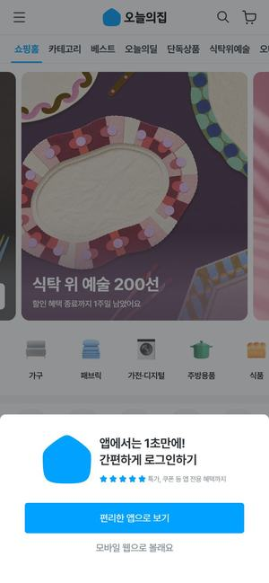
먼저 보세요28와 포인트위쪽 메뉴 하나에 ‘집구경 · 쇼핑 · 인테리어/생활’을 나란히 두고 오갑니다. 쇼핑에서는 기획전 배너 아래 분류 아이콘과 상품 카드가 이어집니다.
BUILDGO라면BUILDGO에 가장 가까운 국내 예 — ‘시공 찾기’와 ‘자재 사기’를 한 앱의 메뉴로 나란히. 자재를 보던 고객이 같은 앱에서 시공 견적까지 받습니다.
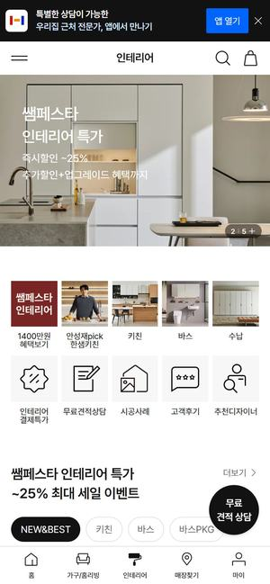
29와 포인트‘가구/홈리빙 · 인테리어’ 두 메뉴 아래 기획전 배너와 분류 아이콘, 상품, 시공 사례가 이어지고, ‘무료 견적상담’과 ‘채팅 상담’이 같은 몰 안에 있습니다.
BUILDGO라면자재를 보다가 바로 견적 상담으로 넘어가는 흐름 — 상품 옆에 ‘이 자재로 시공한 사례’를 붙이는 방식.
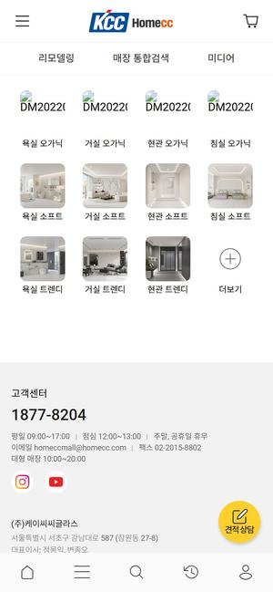
30와 포인트자재 기획전 배너와 상품 목록 사이에 ‘바닥재 견적·단가 문의’와 ‘인테리어 전문가 상담’이 있고, 시공하는 사람이 직접 등록하는 ‘시공자 신청’ 메뉴까지 있습니다.
BUILDGO라면고객은 견적 문의로, 시공 전문가는 ‘시공자 신청’으로 — 자재몰 하나에 양쪽 입구를 두는 구조의 국내 예입니다.
등급별 가격과 포인트 적립은 보여주는 방식이 가입을 좌우합니다. 참고로, 추천한 사람의 추천한 사람까지 여러 단계로 포인트를 나눠 주는 방식은 방문판매법의 다단계판매 등록 대상인지 먼저 확인이 필요합니다.
와 포인트‘무료 커피는 시작일 뿐’ 한 줄로 시작해 가입, 적립, 혜택을 단계 그림으로 설명하고, 등급별로 1달러당 쌓이는 별 개수를 따로 안내합니다.
BUILDGO라면포인트 안내의 기준 — ‘가입 → 구매 → 적립 → 자재 결제에 사용’ 단계 그림과 등급별 적립률 표 한 장.
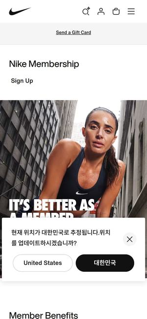
32와 포인트‘회원이라서 더 좋다’ 큰 문구와 운동 사진, 그 아래 회원 혜택을 짧은 카드로 묶고 자주 묻는 질문이 가입까지 이어집니다.
BUILDGO라면회원가입 화면에서 ‘회원이 되면 받는 것’(회원가·포인트·전담 상담)을 카드 3장으로. 가입 버튼은 그 바로 아래.
와 포인트‘최대 5% 적립’ 큰 숫자로 시작해, 적립되는 것과 안 되는 것(포인트로 결제한 금액 등)까지 한 페이지에 정리합니다.
BUILDGO라면포인트 규칙은 숫자 하나로 크게, 예외는 작게 분명히. 나중에 ‘왜 적립이 안 됐냐’는 문의를 줄입니다.
숨고처럼 동네와 공사를 묻는 검색창 첫 화면, 크몽처럼 설계·시공 기술을 패키지 상품으로, hipages처럼 면허·후기가 보이는 전문가 프로필, 오늘의집처럼 같은 앱 안에서 자재 쇼핑까지. 문의하신 네 가지(기술 판매·회원 자재몰·등급별 가격·포인트)가 한 흐름에 들어가고, 국내 사용자에게 익숙한 문법이라 이 안을 권합니다.
공종별 예상 견적(숨고 가격 정보)과 세 곳 견적 비교(Block)로 중개를 먼저 열고, 예상 수입을 보여주는 입점 화면(에어비앤비 호스트·숨고 고수 가입)으로 전문가를 모은 뒤 자재몰을 붙이는 순서. 처음 예산이 작을 때 가장 현실적인 안입니다.
플랫폼은 화면보다 규칙이 먼저입니다. 아래 네 가지가 정해지면 시안이 실제 서비스에 가까워집니다.
세 시안 중 고르신 방향에 실제 시공 분야 이름·회원 등급 규칙·포인트 규칙을 넣어 다듬고, 화면 수와 기능 목록으로 정리해 견적을 드립니다.